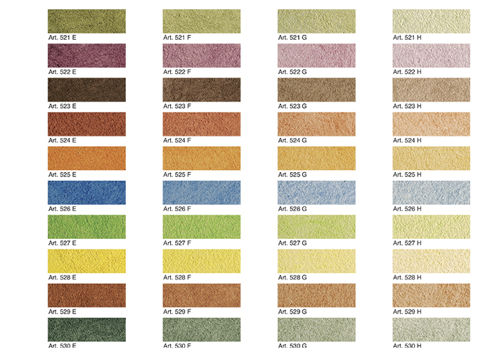
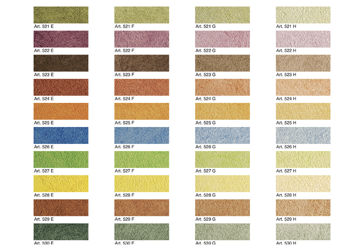

Velatura Rustica
Velatura Rustica — декоративная система для фасада и интерьера, с эффектом старинных слегка потертых временем стен в сельском стиле. Создается двумя материалами: фактурой —SpiverQuartzAntico или SpiverSilAntico и лесировочным покрытием Velatura. Великолепно подходит для интерьеров загородного типа.
 
